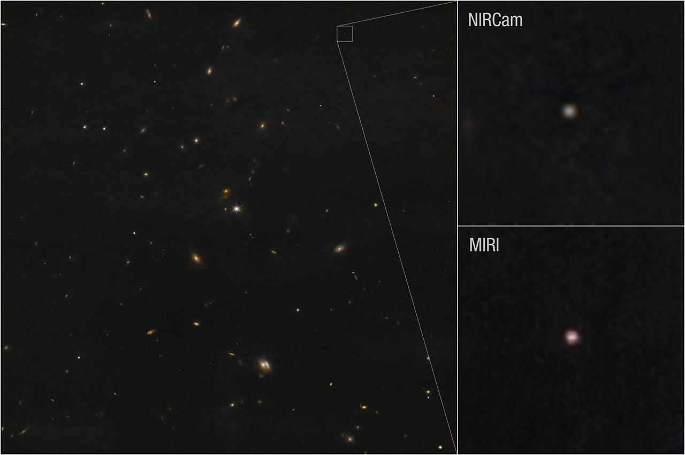
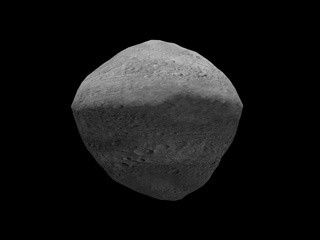
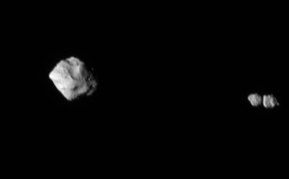
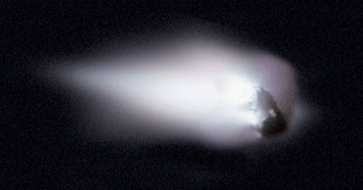
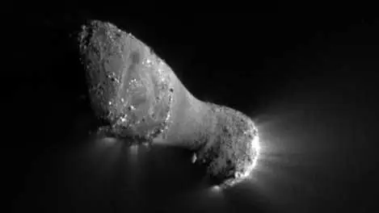

Asteroides y Cometas
Los pequeños cuerpos de nuestro sistema solar esconden grandes sorpresas.

Los pequeños cuerpos de nuestro sistema solar esconden grandes sorpresas.
Los asteroides, a veces llamados planetas menores, son remanentes rocosos y sin aire que quedaron de la formación inicial de nuestro sistema solar hace unos 4.600 millones de años. La mayoría de los asteroides orbitan alrededor del Sol, entre Marte y Júpiter, dentro del cinturón principal de asteroides. Los asteroides varían en tamaño, desde Vesta, que es el más grande con unos 530 kilómetros de diámetro, hasta cuerpos de menos de 10 metros de diámetro. La masa total de todos los asteroides combinados es menor que la de la Luna de la Tierra.
Conozcamos a varios de ellos:
sentence placeholder

NASA, ESA, CSA, STScI, Andy Rivkin (APL)
sentence placeholder

NASA Visualization Technology Applications and Development (VTAD)
sentence placeholder

NASA/Goddard/SwRI/Johns Hopkins (APL)
Los cometas son bolas de nieve cósmicas de gases, rocas y polvo congelados que orbitan alrededor del Sol. Cuando están congelados, podemos referenciar que tienen el tamaño de un pequeño pueblo. Cuando su órbita los acerca al Sol, se calientan y expulsan polvo y gases formando una gigantesca cabeza brillante, más grande que la mayoría de los planetas. El polvo y los gases forman una cola que se extiende millones de kilómetros desde el Sol. Es probable que haya miles de millones de cometas orbitando nuestro Sol en el Cinturón de Kuiper y en la aún más distante Nube de Oort.
Conozcamos a varios de ellos:
sentence placeholder

Halley Multicolor Camera Team, Giotto Project, ESA
sentence placeholder

NASA/JPL-Caltech/UMD
sentence placeholder

NASA/Preston Dyches